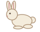

Même caméra de profil et unité80×64. L’animation ne déforme aucune partie du corps : translation verticale0–3px, déplacement horizontal et réflexion horizontale pour le second lapin. Référence et résultat assemblé utilisent le même dessin, sans remise à hauteur.

Crâne22unités ; torse40×26unités ; oreilles24unités ; silhouette hors trait≈59×57unités. Mesures géométriques de repères de cette référence stylisée, pas une certification anatomique. Les membres cachés dans cette vue de profil ne sont pas vérifiables. Toutes les phases conservent le dessin entier rigide : aucune variation tête/torse/membres n’est introduite.